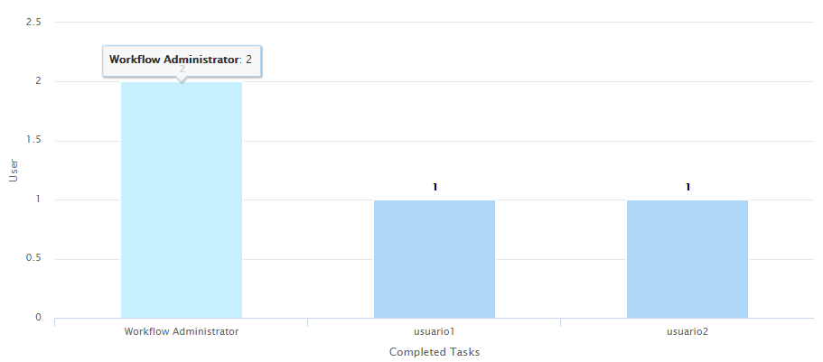
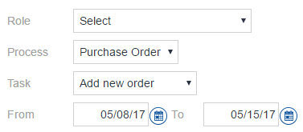
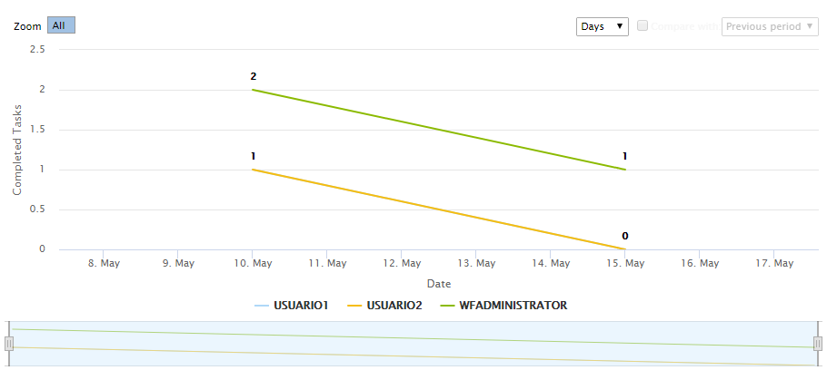

The Team Performance analysis includes charts. User rankingThis chart compares the number of tasks completed over the last days between the members of the selected role and for the selected process and task. Only users with at least one completed task in the selected period are shown.  Also, the workflow user is able to change which information is displayed by using a set of filters on the top of the chart (as it is shown below). In every case, the value "Select" will display the information associated with all possible values in such field (e.g. "selected" in Role field will display the performance of every user). 
Performance trendThis chart compares the performance trend between the members of the selected role and for the selected process and task over the last days. 
|
| Backlinks |
| Toc:GeneXus BPM Suite |
| Statistics and business process optimization |